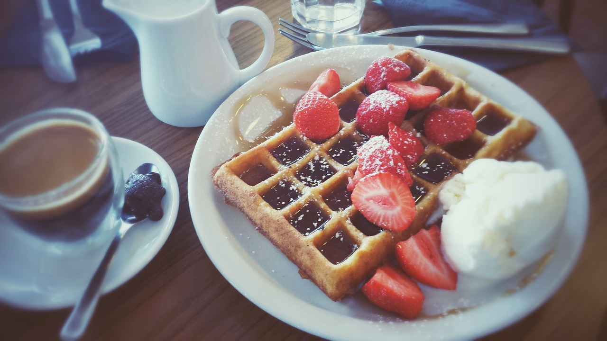

Waffle Clássico

legenda da imagem
Ingredientes
- 2 xicaras (chá) de farinha de trigo
- 2 colheres (sopa) de açucar
- 2 colheres (chá) de fermento em pó
- 1/2 colher (chá) de sal
- 2 colheres de amido de milho
- 3 ovos batidos
- 4 colheres (sopa) de manteiga sem sal
- 1 e 3/4 de xicaras de leite
- 1 colher (sopa) de exencia de baunilha
Modo de preparo
- Peneire todos os ingredientes secos.
- Acrescente a gema, o leite, a manteiga derretida aos ingredientes secos e misture-os bem.
- Junte a clara batida em neve, incorporando delicadamente.
- Despeje aproximadamente 1/2 xícara de chá de massa na forma de Waffle quente.
- A luz do indicador deverá estar apagada, quando a massa for colocada a luz acenderá
- Quando a luz apagar novamente, o Waffle está pronto.
- Você poderá servir estes Waffles com geleia ou até mesmo requeijão.
- O único inconveniente desta receita é que você tem que ter a máquina de waffle (nunca tive a experiência
de fazê-lo sem a máquina).
Informaçoes adicionais
É um otima pedida para o cafe da manhã